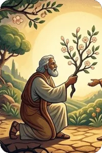
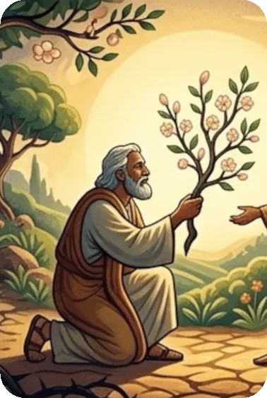

The Book of Hosea can be divided into two parts: (1) Hosea 1 : 1 – 3 : 5 is a description of an adulterous wife and a faithful husband, symbolic of the unfaithfulness of Israel to God through idolatry, and (2) Hosea 4 : 1 – 14 : 9 contains the condemnation of Israel, especially Samaria, for the worship of idols and her eventual restoration.
The first section of the book contains three distinctive poems illustrating how God’s children returned time after time to idolatry. God commands Hosea to marry Gomer, but after bearing him three children, she walks away from Hosea to her lovers. The symbolic emphasis can be seen clearly in the first chapter as Hosea compares Israel’s actions to turning from a marriage to life as a prostitute. The second section contains Hosea’s denunciation of the Israelites but followed by the promises and the mercies of God.
The Book of Hosea is a prophetic accounting of God’s relentless love for His children. Since the beginning of time God’s ungrateful and undeserving creation has been accepting God’s love, grace, and mercy while still unable to refrain from its wickedness.
The last part of Hosea shows how God’s love once again restores His children as He forgets their misdeeds when they turn back to Him with a repentant heart. The prophetic message of Hosea foretells the coming of Israel’s Messiah 700 years in the future. Hosea is quoted often in the New Testament.
Hosea 2 : 23 is the wonderful prophetic message from God to include the Gentiles as His children as recorded also in Romans 9 : 25 and 1 Peter 2 : 10. Gentiles are not originally “God’s people,” but through His mercy and grace, He has provided Jesus Christ, and by faith in Him we are grafted into the tree of His people (Romans 11 : 11 – 18). This is an amazing truth about the Church, one that is called a “mystery” because before Christ, God’s people were considered to be the Jews alone. When Christ came, the Jews were temporarily blinded until the “full number of the Gentiles has come in” (Romans 11 : 25).
Summary of the Book of Hosea from GotQuestions.org — is a popular Christian website and "parachurch" ministry that provides answers to a vast array of questions about the Bible, theology, and spiritual life.
Do you have a question? Submit your Bible Questions to GotQuestions.org No need to sign up, just use your email to receive notifications from any answers. Also browse their website for many questions that may answer your questions.
For personal questions, always pray first to God and seek answers through deep prayers. That may answer deep questions in your heart, and mind, as only God, Holy Spirit and Jesus can see through and through on your feelings, thoughts and situation, better than any man can.